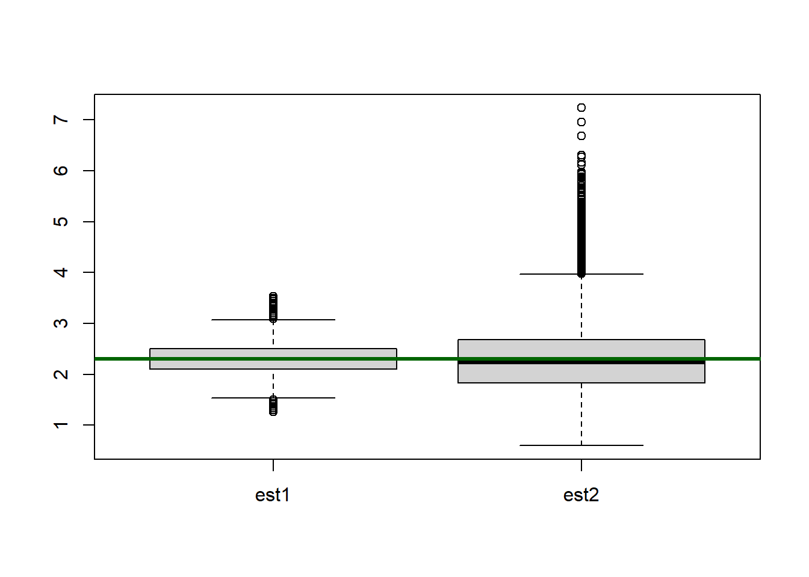
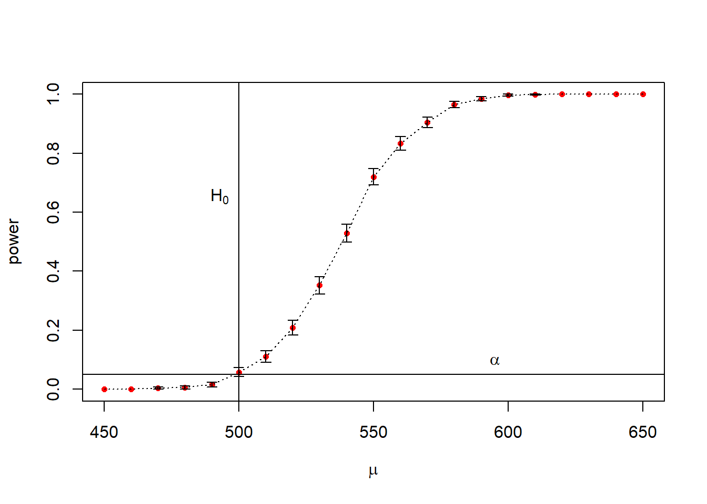
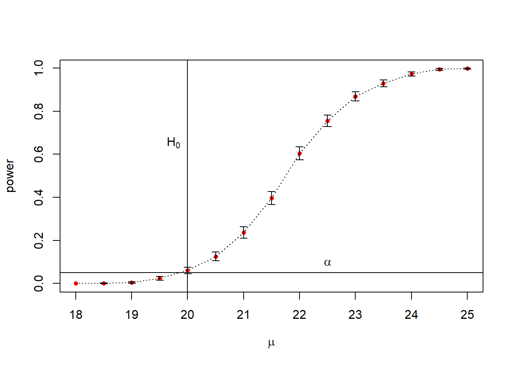

```{r}
set.seed(5172013)
```Day 5 Lab Solutions Monte Carlo Methods in Inference
Mean Squared Error (MSE) and Bias
Simulate 1000 data sets with 30 \(Poisson(\lambda = 2.3)\) realizations in each data set
```{r}
sim_size <- 100000
sample_size <- 30
pois_lambda <- 2.3
pois_data <- matrix(
rpois(n = sim_size * sample_size, lambda = pois_lambda),
nrow = sim_size,
ncol = sample_size
)
```Define two types of estimators
```{r}
pois_est1 <- function(pois_counts){
return(mean(pois_counts))
}
pois_est2 <- function(pois_counts){
return(var(pois_counts))
}
```Apply the two estimators to the simulated data
```{r}
est_vec1 <- numeric(sim_size)
est_vec2 <- numeric(sim_size)
for (i in 1:sim_size){
est_vec1[i] <- pois_est1(pois_data[i,])
est_vec2[i] <- pois_est2(pois_data[i,])
}
```Plot box plots of the two sampling distributions
```{r}
boxplot(list(est1 = est_vec1, est2 = est_vec2))
abline(h = pois_lambda, lwd = 3, col = "darkgreen")
```
Compute MSE for both estimators
```{r}
(mse1 <- mean((est_vec1 - pois_lambda)^2))
(mse2 <- mean((est_vec2 - pois_lambda)^2))
```[1] 0.07624437
[1] 0.4405612Compute Monte Carlo errors
```{r}
(mse1_mc_error <- sd((est_vec1 - pois_lambda)^2) / sqrt(sim_size))
(mse2_mc_error <- sd((est_vec2 - pois_lambda)^2) / sqrt(sim_size))
```[1] 0.0003436271
[1] 0.00239868and intervals
```{r}
(c(mse1 - 1.96 * mse1_mc_error, mse1 + 1.96 * mse1_mc_error))
(c(mse2 - 1.96 * mse2_mc_error, mse2 + 1.96 * mse2_mc_error))
```[1] 0.07557086 0.07691788
[1] 0.4358598 0.4452627Exercise 1
Compute biases of the above estimators via Monte Carlo. Can you say with some confidence whether these biases are 0 or not?
Compute coverage of the 95% confidence intervals of the first estimator (the one that uses sample mean). Can you tell if your estimated coverage is different from 0.95?
Exercise 1 Solutions
Compute bias for both estimators
```{r}
(bias1 <- mean(est_vec1 - pois_lambda))
(bias2 <- mean(est_vec2 - pois_lambda))
```[1] 0.001024333
[1] 0.0009227931Compute Monte Carlo errors
```{r}
(bias1_mc_error <- sd(est_vec1-pois_lambda) / sqrt(sim_size))
(bias2_mc_error <- sd(est_vec2-pois_lambda) / sqrt(sim_size))
```[1] 0.0008731786
[1] 0.002098964and 95% confidence intervals
```{r}
c(bias1 - 1.96 * bias1_mc_error, bias1 + 1.96 * bias1_mc_error)
c(bias2 - 1.96 * bias2_mc_error, bias2 + 1.96 * bias2_mc_error)
```[1] -0.0006870966 0.0027357633
[1] -0.003191175 0.005036762Some guidelines:
Write a function that returns 95% confidence intervals for the first estimator
```{r}
pois_ci <- function(pois_counts){
sample_mean <- mean(pois_counts)
sample_sd <- sd(pois_counts)
return(c(
"lb" = sample_mean - 1.96 * sample_sd / sqrt(length(pois_counts)),
"ub" = sample_mean + 1.96 * sample_sd / sqrt(length(pois_counts))
))
}
```Allocate a vector for 0/1’s to indicate coverage of the true value
```{r}
coverage_indicator <- numeric(sim_size)
for (i in 1:sim_size){
cur_ci <- pois_ci(pois_data[i,])
if ((cur_ci[1] < pois_lambda) && (cur_ci[2] > pois_lambda)){
coverage_indicator[i] <- 1
}
}
(est_cov <- mean(coverage_indicator))
```[1] 0.9385Monte Carlo error – notice the placement of the square root!
```{r}
est_cov_error <- sqrt(est_cov * (1 - est_cov) / sim_size)
c(est_cov - 1.96 * est_cov_error, est_cov + 1.96 * est_cov_error)
```[1] 0.9370109 0.9399891Hypothesis Testing and Confidence Intervals
Example 1: Hypothesis testing
Suppose we are interested in making inference about the mean of a normally distributed variable with known standard deviation of 100. For our inference, \(H_0: \mu = 500\); \(H_a: \mu > 500\). We wish to calculate the empirical probability of making a type I error.
```{r}
set.seed(378923)
samp_size <- 20
alpha <- 0.05
mu0 <- 500
sigma <- 100
sim_size <- 1000 # number of replicates
p <- numeric(sim_size) # storage for p-values
for (sim in 1:sim_size) {
samp <- rnorm(samp_size, mu0, sigma) # simulate from H0
ttest <- t.test(samp, alternative = "greater", mu = mu0)
p[sim] <- ttest$p.value
}
(p_hat <- mean(p < alpha))
(se_hat <- sqrt(p_hat * (1 - p_hat) / sim_size))
p_hat + c(-1,1) * 1.96 * se_hat # c(-1,1) vectorizes plus and minus
```[1] 0.053
[1] 0.007084561
[1] 0.03911426 0.06688574Since the data are normal to begin with, we would expect 0.05 to be contained in the interval
Example 2: Power
Now we will consider the same case as example 1, but we are interested in the probability of making a type II error.
```{r}
mu <- seq(from = 450, to = 650, by = 10) #alternatives
n_mu <- length(mu)
power <- numeric(n_mu)
for (i in 1:n_mu) {
mu_a <- mu[i] # Select an alternative
p <- numeric(sim_size)
for(sim in 1:sim_size) {
# simulated from alternative
samp <- rnorm(samp_size, mu_a, sigma)
# perform t-test
ttest <- t.test(samp, mu = mu0, alternative = 'greater') #change to two.sided
p[sim] <- ttest$p.value
}
power[i] <- mean(p < 0.05) # We want low p-values since the null is not true.
}
``````{r}
se <- sqrt(power * (1 - power) / sim_size)
plot(mu, power, cex = .75, pch = 16, col = 'red', xlab = expression(mu))
abline(v = mu0, lty = 1)
text(500, .65, expression(H[0]), pos = 2)
abline(h = .05, lty = 1)
text(595, .05, expression(alpha), pos = 3)
lines(mu, power, lty = 3)
arrows( # Error bars-- very small
c(mu, mu), c(power, power), c(mu, mu), c(power + 1.96 * se, power - 1.96 * se),
length = .05,
angle = 90
)
```Warning in arrows(c(mu, mu), c(power, power), c(mu, mu), c(power + 1.96 * :
zero-length arrow is of indeterminate angle and so skipped
Warning in arrows(c(mu, mu), c(power, power), c(mu, mu), c(power + 1.96 * :
zero-length arrow is of indeterminate angle and so skipped
Warning in arrows(c(mu, mu), c(power, power), c(mu, mu), c(power + 1.96 * :
zero-length arrow is of indeterminate angle and so skipped
Warning in arrows(c(mu, mu), c(power, power), c(mu, mu), c(power + 1.96 * :
zero-length arrow is of indeterminate angle and so skipped
Warning in arrows(c(mu, mu), c(power, power), c(mu, mu), c(power + 1.96 * :
zero-length arrow is of indeterminate angle and so skipped
Warning in arrows(c(mu, mu), c(power, power), c(mu, mu), c(power + 1.96 * :
zero-length arrow is of indeterminate angle and so skipped
Warning in arrows(c(mu, mu), c(power, power), c(mu, mu), c(power + 1.96 * :
zero-length arrow is of indeterminate angle and so skipped
Warning in arrows(c(mu, mu), c(power, power), c(mu, mu), c(power + 1.96 * :
zero-length arrow is of indeterminate angle and so skipped
Warning in arrows(c(mu, mu), c(power, power), c(mu, mu), c(power + 1.96 * :
zero-length arrow is of indeterminate angle and so skipped
Warning in arrows(c(mu, mu), c(power, power), c(mu, mu), c(power + 1.96 * :
zero-length arrow is of indeterminate angle and so skipped
Warning in arrows(c(mu, mu), c(power, power), c(mu, mu), c(power + 1.96 * :
zero-length arrow is of indeterminate angle and so skipped
Warning in arrows(c(mu, mu), c(power, power), c(mu, mu), c(power + 1.96 * :
zero-length arrow is of indeterminate angle and so skipped```{r}
warnings()
```
Excercise 1
Suppose the heights of Douglas Firs in a stand of trees planted the same year are normally distributed with a height of 20 feet and a standard deviation of 4 feet. However, you have reason to believe that the soil quality is higher in an area near a stream, so you think the trees might grow faster there. You have the time and money to sample the heights of 15 trees near the stream. Following convention, you plan on using an alpha of 0.05.
What is the empirical probability of a type I error, including a 95% confidence interval for that probability?
Calculate the power of the test for a range of reasonable alternatives
Excercise 1 Solution
```{r}
samp_size <- 15
alpha <- 0.05
mu0 <- 20
sig <- 4
p <- numeric(sim_size)
for(sim in 1:sim_size) {
samp <- rnorm(samp_size, mean = mu0, sd = sig)
ttest <- t.test(samp, alternative = 'greater', mu = mu0)
p[sim] <- ttest$p.value
}
(p_hat <- mean(p < alpha))
se_hat <- sqrt(p_hat * (1 - p_hat) / sim_size)
p_hat + 1.96 * c(-1, 1) * se_hat
```[1] 0.055
[1] 0.04086964 0.06913036```{r}
mu <- seq(from = 18, to = 25, by = 0.5) #alternatives
n_mu <- length(mu)
power <- numeric(n_mu)
for (i in 1:n_mu) {
mu_a <- mu[i] # Select an alternative
p <- numeric(sim_size)
for(sim in 1:sim_size) {
samp <- rnorm(samp_size, mean = mu_a, sd = sig)
ttest <- t.test(samp, mu = mu0, alternative = 'greater')
p[sim] <- ttest$p.value
}
power[i] <- mean(p < 0.05)
}
``````{r}
se <- sqrt(power * (1 - power) / sim_size)
plot(mu, power, cex = .75, pch = 16, col = 'red', xlab = expression(mu))
abline(v = mu0, lty = 1)
text(mu0, .65, expression(H[0]), pos = 2)
abline(h = .05, lty = 1)
text(22.5, .05, expression(alpha), pos = 3)
lines(mu, power, lty = 3)
arrows(
c(mu, mu), c(power, power), c(mu, mu), c(power + 1.96 * se, power - 1.96 * se),
length = .05,
angle = 90
)
```Warning in arrows(c(mu, mu), c(power, power), c(mu, mu), c(power + 1.96 * :
zero-length arrow is of indeterminate angle and so skipped
Warning in arrows(c(mu, mu), c(power, power), c(mu, mu), c(power + 1.96 * :
zero-length arrow is of indeterminate angle and so skipped